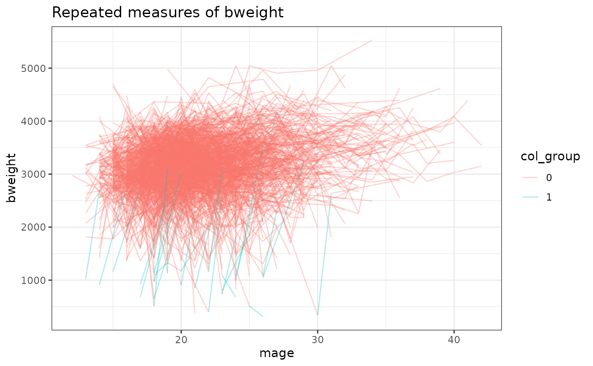
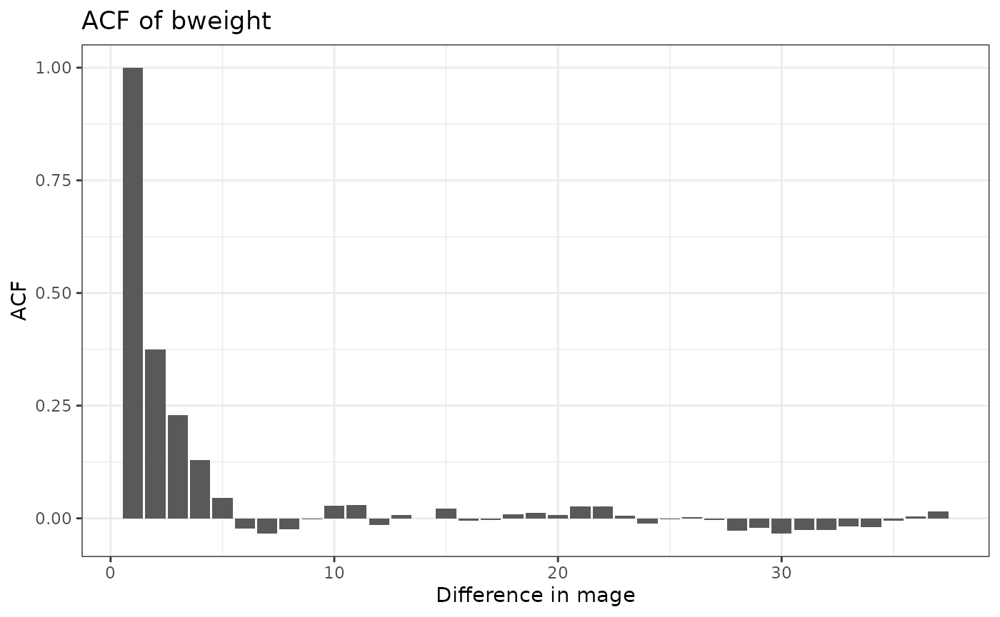

Example script
run_example.RmdLoad data
rm(list = ls())
library(modelLong)
# Load example longitudinal data (must be of long format)
URL <- "https://raw.githubusercontent.com/alejandroh3005/longitudinal-data/main/data/cdc-birthwt.csv"
data <- read.csv(URL)
# Define binary group variable
data$"Low weight" <- as.factor(ifelse(data$bweight < 1200, 1, 0))Summarize data
Print Table 1.
# Summarize data in Table 1, stratify summary by low weight status
# Exclude Mother and Child ID in data summary
summary_res <- modelLong::summary(data = data[-c(1, 5)],
group_var = "Low weight")
summary_res$table1| Variable |
Overall N = 4,3901 |
Low weight
|
|
|---|---|---|---|
|
0 N = 4,3601 |
1 N = 301 |
||
| border | |||
| 1 | 878 (20%) | 870 (20%) | 8 (27%) |
| 2 | 878 (20%) | 874 (20%) | 4 (13%) |
| 3 | 878 (20%) | 873 (20%) | 5 (17%) |
| 4 | 878 (20%) | 870 (20%) | 8 (27%) |
| 5 | 878 (20%) | 873 (20%) | 5 (17%) |
| bweight | 3,156 (2,850, 3,515) | 3,172 (2,863, 3,515) | 854 (680, 1,090) |
| mage | 22 (18, 24) | 22 (18, 24) | 21 (18, 24) |
| 1 n (%); Mean (Q1, Q3) | |||
Plot data
Plot repeated measures over time and ACF
# Create plots of repeated measures and ACF
plot_res <- modelLong::plot(data = data,
outcome = "bweight",
time = "mage",
id = "mid",
col_group = "Low weight")
plot_res$data_plot
plot_res$acf_plot